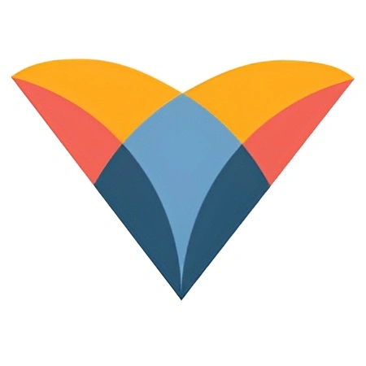

01 — About Me
Hi! My name is Myron Paes, and I am a sophomore undergraduate
student studying Data Science and Business at New Jersey Institute
of Technology. Presently, I am leading product development at
Tapyoca Music, managing the development of innovative financial
tracking software solutions for independent music artists.
As an aspiring Product Marketing Manager, my studies are focused
primarily on product marketing, data analysis methodologies, and
technical writing, all facets of my professional repertoire which
enable me to work efficiently!
I am committed to sustained excellence and improvement, whether that
be in the classroom, the office, or the home. Delivering
high-quality results through data-driven decision making and agile
management methodologies is critical to a manager, and my studies
(both technical and entrepreneurial) at NJIT foster my ability to
fulfill such an objective! Here are some of my key accomplishments:
Creator Copilot (Financial Tracking Platform at Tapyoca Music)
Leading product development for a novel subsidiary focused on
financial tracking for creatives. Graduated from NSF I-Corps cohort,
conducting 40 customer discovery sessions and establishing intuitive
Trello frameworks to augment work efficiency for a startup team of
25.
ReMatter Energy (Waste-to-Energy Software Suite)
Co-Founder of a startup dedicated to optimizing waste-to-energy
process output by over 30% with modern AI methodologies.
Spearheading market research and cross-displinary collaboration to
drive product development and strategic growth during early stage
development.
Oracle ERP System Optimization at Virtua Health
Analyzed over 1000 client tickets to identify key pain points in
Oracle ERP system, informing future IT reforms. Optimized ID
database, vacating 9000 previously null/invalid cells and resolving
ID creation bottleneck.
02 — Selected Works
Full Project Timeline
I maintain a robust portfolio of engineered solutions and business
concepts, ranging all the way from machine learning models for
Catan to my very own startup ventures!
View Project Portfolio →
03 — Professional Experience
Digital Product Manager at Five Below
June 2026 - August 2026 · Philadephia, PA
Driving GtM for mobile "treasure hunt" gamification initiative on
the Five Below app, impacting over 2 million application users!
Lead Product Marketing Manager at Tapyoca Music
March 2025 - Present · Newark, NJ
Entrepreneurial lead on novel subsidiary product: Creator Copilot
(independent filmmaker accounting software suite). Graduate of
Summer 2025 Northeastern NSF I-Corps cohort, conducting 40
customer discovery sessions. Spearheaded client outreach
initiatives to maximize conversion and retention for hundreds of
potential customers. Established intuitive Jira task delegation
framework, augmenting work efficiency for a startup team of 25.

IT Intern at Virtua Health
May 2025 - Sept 2025 · Marlton, NJ
Analyzed over 1000 client tickets to identify key pain points in
Oracle ERP system, informing future IT reforms. Optimized ID
database, vacating 9000 previously null/invalid cells and
resolving ID creation bottleneck.
Operations Intern at NJ Courts
May 2025 - Sept 2025 · Marlton, NJ
Efficiently digitized over 5000 legal cases (the entirety of NJ
Vicinage 15's inventory) utilizing proprietary vicinage software.
Classified over 1000 legal portfolios, determining disposal status
based on categorical statute of limitations.
04 — Skills
Product Tools & Methodologies
- Agile & Scrum
- Waterfall
- Asana & Jira
- Figma Design
- Google Keywords
Advanced Marketing Practices
- A/B Testing
- Positioning
- User Segmentation
- Sentiment Analysis
Technical Skills
- Python (NumPy, Pandas, Scikit, PyTorch)
- Java & C++
- Excel & Data Visualization
Advanced Statistical Methods
- Applied Statistics
- ANOVA
- Neyman-Pearson Lemma Test
- Chi-Squared Test
05 — Education
B.S. in Data Science & B.S. in Business (Marketing)
Expected 2028 · New Jersey Institute of Technology
Dual Degree Program. Full-ride Merit Scholarship via Albert Dorman
Honors College. Enrolled in accelerated BS/MS program. Focusing on
the intersection of business strategy and technical
implementation.
High School Diploma
2020 - 2024 · Cherokee High School
Varsity Cross Country/Track, Varsity Chess Team Member, Project
Lead the Way, Aeronautics Club President, Future Business Leaders
of America.
06 — Leadership
President & Peer Entrepreneur-In-Residence
Apr 2025 - Present · Entrepreneurs Society, NJIT
Leading networking initiatives and event organization. Lead
bookkeeper tracking attendance and student outreach for 400+
members.
Eagle Scout, Senior Patrol Leader
Oct 2016 - Oct 2024 · Boy Scouts of America
Earned Eagle Scout Rank with 36 merit badges and 1 Eagle Palm. Led
camping trips and mentored younger scouts. Final Eagle project
involved building a storage shed for local church.
Let's Thrive Together!
Explore my projects and experience to see my work in action; feel free
to contact me to discuss potential collaborations or to learn more
about my skills and experience!